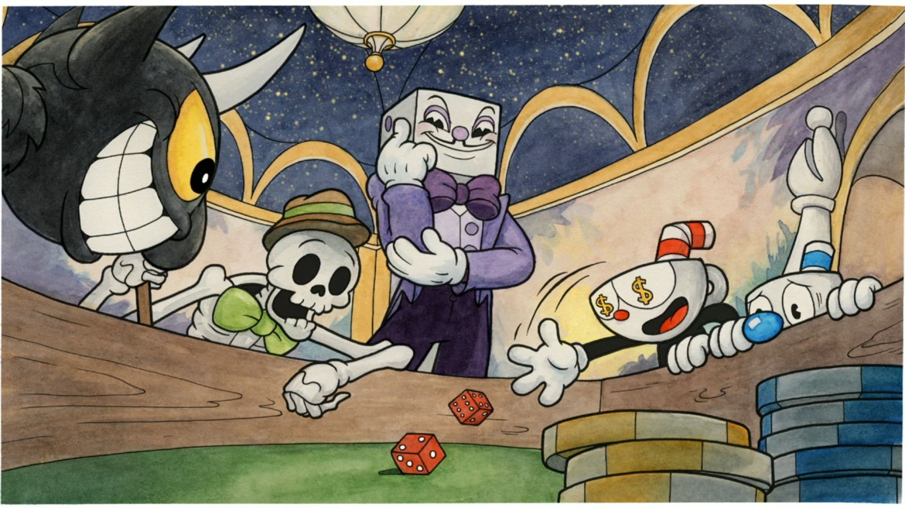
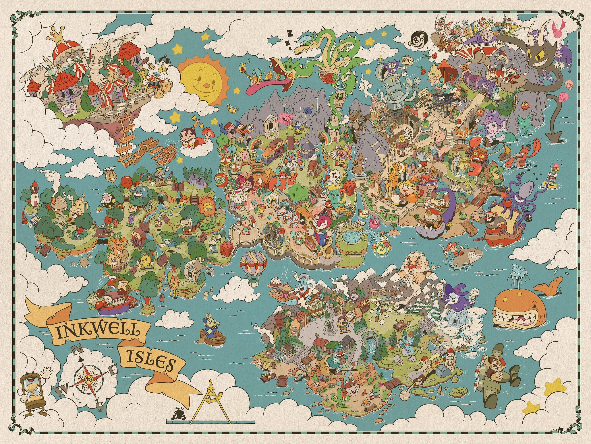

Cuphead è un videogioco d’azione e piattaforme sviluppato da Studio MDHR. In questo sito presenterò il gioco, i protagonisti e i principali boss e livelli.
La storia

Dopo aver perso una scommessa con il Diavolo, Cuphead e Mugman devono viaggiare per le Isole Calamaio e raccogliere i contratti dei debitori. Inizia così la loro avventura tra boss bizzarri e sfide difficili.
Com’è strutturato il gioco

Il viaggio attraversa le Isole Calamaio, divise in aree con livelli platform e scontri contro i boss.